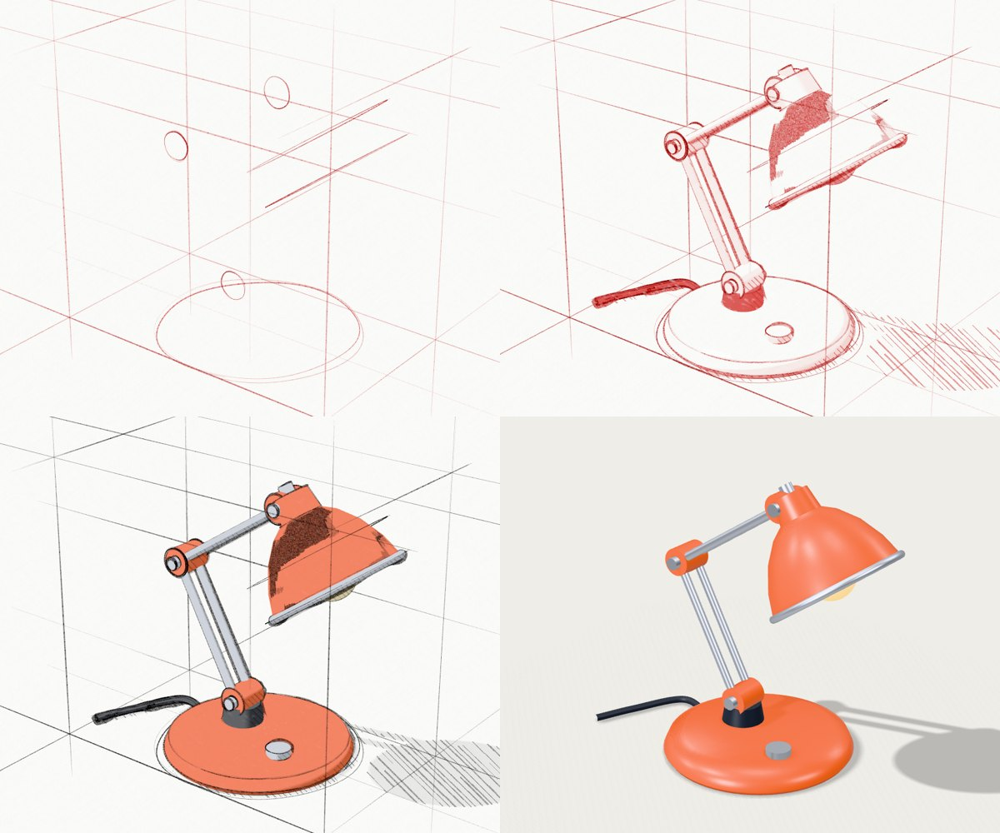
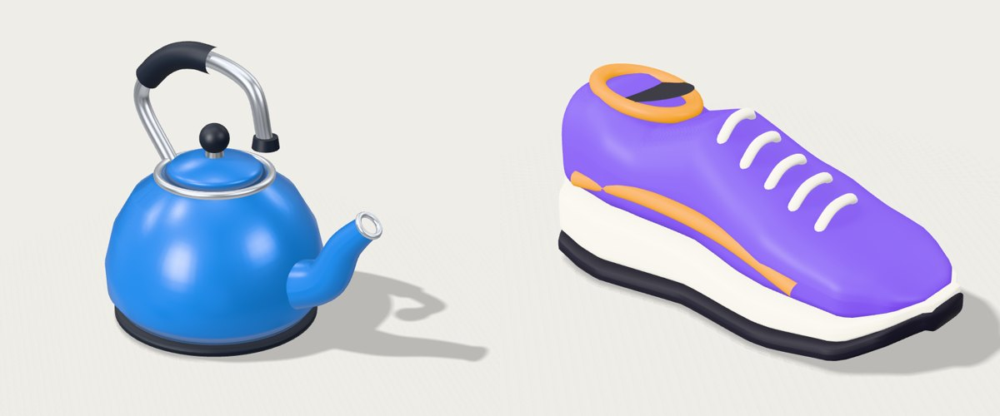

Эскизкоторый оживает
Бесплатный навык sketch-to-3d: Claude рисует вещь маркером, как дизайнер, а в конце рисунок превращается в настоящий 3D-рендер. Ниже: как поставить, что ему говорить и где пределы.
лицензия MITролик около 7 секундвидео и сайт
Чтобы всё скачалось с первого раза. Навык, библиотеки и браузер для рисования тянутся с зарубежных сайтов. Если страница не открывается или загрузка обрывается, включи BrodSky. 👉 @Brodsky_vpn_bot
Как это выглядит
Круги, линии, цвет, щёлк
- Этапы. Круги, каркас, контур, карандаш, обводка, маркер со штриховкой, цвет и переход к настоящему предмету.
- Откуда вещь. Берёт твою 3D-модель (GLB, GLTF, OBJ, FBX, STL, PLY, USDZ, 3MF, DAE). Модели нет: опиши простой предмет словами, Claude соберёт его кодом.
- Что на выходе. Видео любого размера или живая версия для сайта.


Лампу, чайник и кроссовок мы собрали по описанию, без готовых моделей. Кроссовок пришлось один раз доработать.
Что понадобится
Проверь до установки
- Claude Codeсам навык бесплатный, а Claude Code платный
- Node.js 18 или новеена нём работает навык
- gitчтобы скачать навык
- ffmpegсобирает видео; на Mac:
brew install ffmpeg - Около 500 МБ под браузер Chromiumскачивается один раз
Установка
Ставим в терминале
- Скачай навык
git clone https://github.com/dannystuart/sketch-to-3d.git ~/.claude/skills/sketch-to-3d
- Зайди в папку
cd ~/.claude/skills/sketch-to-3d
- Поставь библиотеки
npm install
- Поставь браузер для рисования
npx playwright install chromium
- Проверь на пробной лампе
node scripts/render.mjs --code evals/lamp-code-video/files/lamp.js --out test-lamp --only stills
Должны появиться строки сokи картинки в папкеtest-lamp/stills. - Открой новый чат в Claude Code
Тогда Claude увидит навык.
Не хочешь вводить команды руками? Скопируй фразу.
Пусть поставит Claude
Поставь навык из https://github.com/dannystuart/sketch-to-3d в папку ~/.claude/skills по инструкции автора. Перед каждой командой объясни, что она делает. В конце проверь на пробной лампе.
Готовые фразы
Что сказать Claude
Есть 3D-модель
Сделай вертикальный ролик-эскиз 1080×1920 из файла [моя-модель.glb]. Сначала покажи картинки этапов, видео делай после моего «да».
Модели нет
Собери кодом простой предмет: [синий чайник с дужкой-ручкой]. Покажи этапы эскиза, потом сделай вертикальное видео, в конце задержи настоящий предмет на секунду.
Другой стиль
Перерисуй эскиз [чертежом на синем листе] и покажи картинки этапов.
Для сайта
Сделай веб-версию: пусть эскиз рисуется, пока человек листает страницу, а в конце предмет можно покрутить. Объясни по шагам, куда вставить код.
Стили: белая бумага, красный лист, карандаш и чертёж. Тёмной темы в навыке нет.
Честно о пределах
Где не сработает
⚠️
Сканы настоящих вещей выходят каракулями: у них нет чётких краёв. Гнущиеся модели и облака точек не рисуются.
⚠️
Время. На нашем Mac M1 с 8 ГБ семисекундный вертикальный ролик собирался около 40 секунд.
⚠️
github.com/dannystuart/sketch-to-3d
Мелкий предмет и бледные линии. Попроси взять предмет крупнее. На синем чертеже первые этапы почти не видны, проверь картинки до видео.
Доступ из России. Claude официально не работает в России. Если он у тебя не открывается, подключи BrodSky: сервис, через который Claude открывается и работает из России. 👉 @Brodsky_vpn_bot
Что нарисуешь первым?
Новые гайды и разборы выходят в канале.
Канал @BrodskyINFO →VPN от BrodSky: @Brodsky_vpn_bot